Lagos · Algarve
Bem-vindo ao
Vila Palmeira
Um refúgio de paz e conforto, a escassos passos da Meia Praia e perto do centro histórico de Lagos.
Bem-vindo
Vila Palmeira Beach Resort
Estimado hóspede,
É com enorme prazer que o recebemos no Vila Palmeira Beach Resort. Esperamos que a sua viagem tenha sido tranquila e que esteja pronto para desfrutar de momentos inesquecíveis connosco aqui no Algarve.
O nosso resort foi concebido para lhe oferecer um refúgio autêntico de paz e conforto, a escassos passos da Meia Praia e muito perto do centro histórico de Lagos. Quer pretenda relaxar nos nossos jardins subtropicais ou dar um mergulho na nossa piscina de água salgada, a nossa equipa está à sua disposição para garantir que se sente em casa.
Desejamos-lhe uma estadia maravilhosa e relaxante!
A equipa do Vila Palmeira Beach Resort
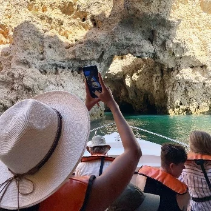
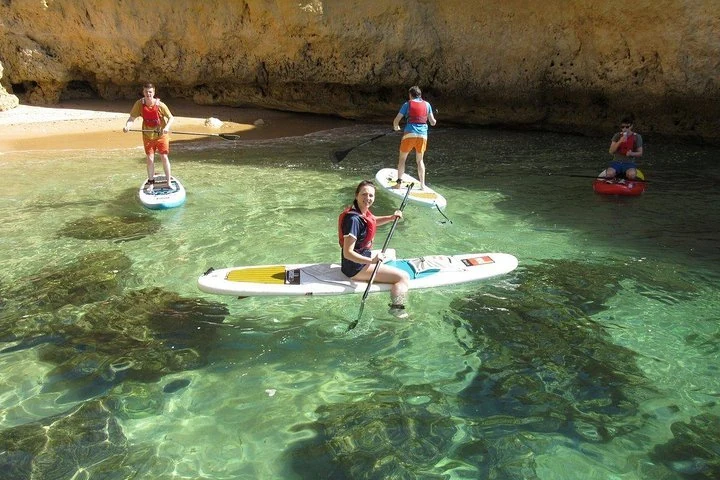
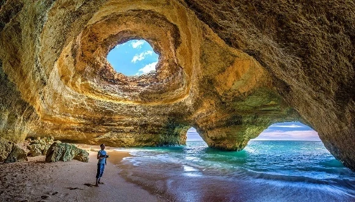
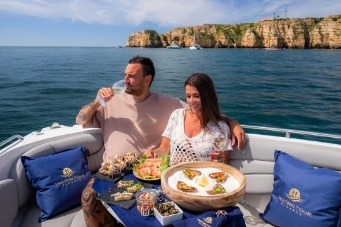
Check-in
16:30
A partir das
Check-out
11:00
Até às
Piscina
Água salgada
Acesso gratuito
Estacionamento
Garagem
Gratuita, sujeita a disponibilidade
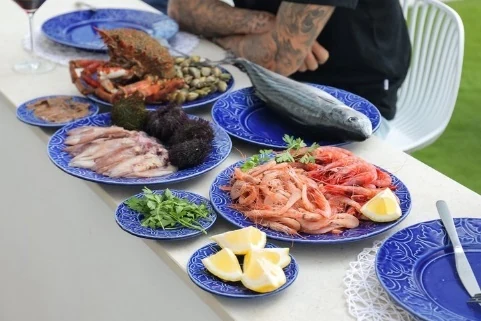
GastronomiaSabores da regiãoRestaurantes da Meia Praia e sugestões em Lagos.Descobrir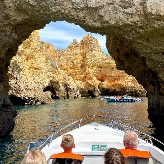
ExperiênciasExplore LagosGrutas, surf, passeios de Jeep e experiências de degustação.Descobrir A Sua EstadiaServiços e indicaçõesHorários da receção, limpeza, Wi‑Fi e regras da piscina.DescobrirGuia de experiências
Explorar Lagos
A nossa receção disponibiliza um conjunto de atividades turísticas. Podemos ajudá-lo a descobrir a região e a reservar atividades.
Aulas de surf e stand up paddle
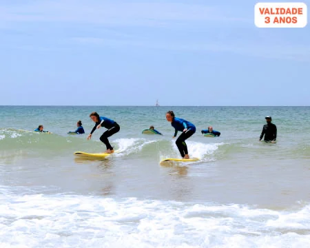
Zoo Lagos
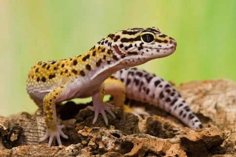
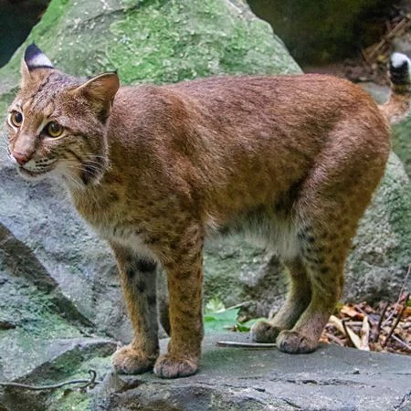
Parque aquático Slide & Splash
Passeios de Jeep off-road
Costa Vicentina, Barragem da Bravura e Monchique.
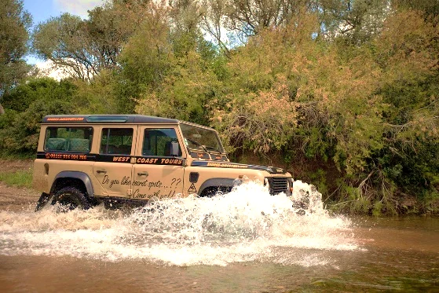
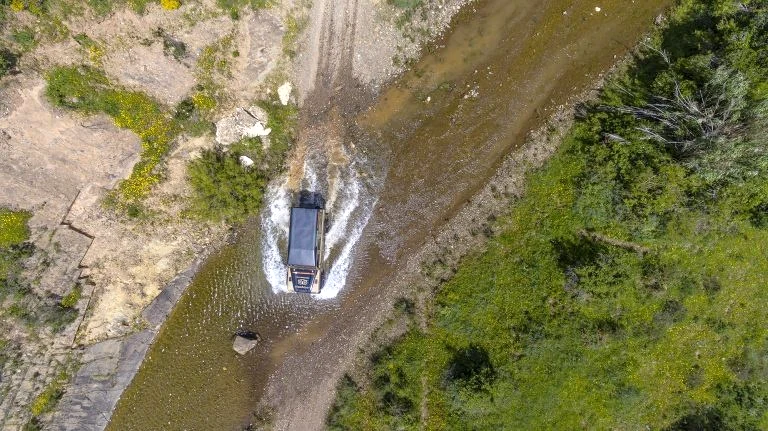
Aulas de culinária tradicional portuguesa
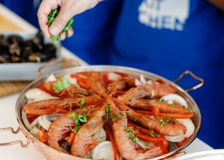
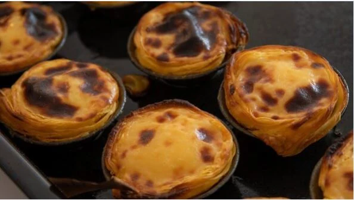
Passeios e experiências de degustação
Passeios de barco

Reserve o seu passeio
- Abra a câmara do telemóvel e aponte para o código QR.
- Toque na notificação ou no endereço que aparece no ecrã.
- Faça a sua própria reserva.
Grutas da Ponta da Piedade em Lagos
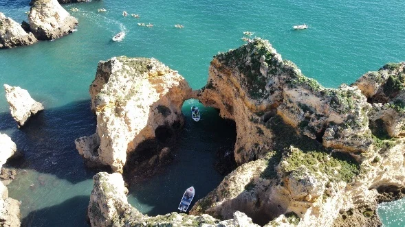
Gruta de Benagil
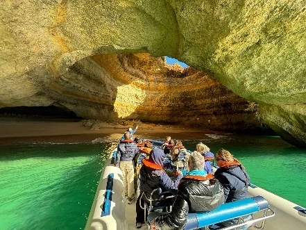
Observação de golfinhos
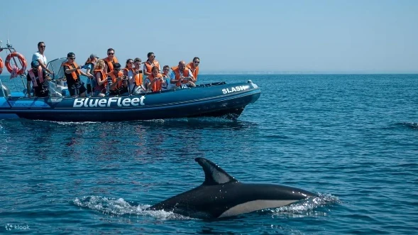
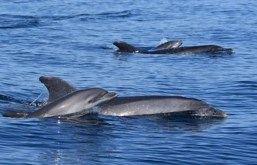
Passeio de caiaque às grutas da Ponta da Piedade
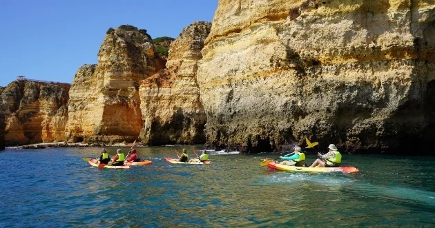
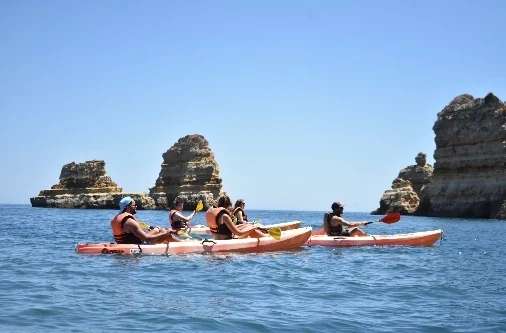
Gastronomia
Sabores da nossa região
Lagos é um destino de referência para quem aprecia a gastronomia algarvia, com peixe fresco, marisco e sabores tradicionais.
Restaurantes a poucos metros do resort
Bar Quim
Um espaço descontraído, ideal para uma refeição informal ou para provar sabores portugueses, com destaque para a sardinha, a sopa de peixe e os pratos de marisco.
Berlim
Situado na Meia Praia, destaca-se pela cozinha tradicional portuguesa. Experimente o arroz de lingueirão ou a cataplana de amêijoas, duas das sugestões da casa.
Página no FacebookQuintal do Peixe
Na Meia Praia, é uma boa opção para quem aprecia peixe fresco e gastronomia tradicional algarvia.
Página no FacebookBahia Beach Bar
Situado na Meia Praia, oferece um ambiente descontraído junto ao mar, ideal para uma refeição informal. A ementa inclui hambúrgueres, club sandwiches, tapas e pratos portugueses e internacionais. Durante o verão, há também música ao vivo.
Visitar websiteOutras recomendações de restaurantes
A Barrigada
A cerca de 3 minutos de carro, junto à EN125, destaca-se pelo ambiente acolhedor e pelo rodízio de peixe fresco grelhado. Disponibiliza também rodízio de carnes e outros pratos regionais. Recomenda-se reserva antecipada.
Visitar websiteChico Zé
A cerca de 10 minutos do centro de Lagos, é conhecido pelo peixe e pela carne grelhados no carvão. Com um ambiente rústico e um agradável espaço exterior, é ideal para uma refeição tradicional. Recomenda-se chegar cedo, pois não costuma aceitar reservas.
Os Artistas
Situado no centro histórico de Lagos, combina um edifício com mais de 250 anos com uma proposta de cozinha gourmet, que utiliza ingredientes locais e internacionais. Disponibiliza menus de degustação, opções à carta e pratos vegetarianos e para crianças. Foi distinguido pelo Guia Michelin.
Visitar websiteO Camilo
Com uma vista deslumbrante sobre a Praia do Camilo, é uma excelente escolha para saborear peixe fresco e cozinha tradicional algarvia num cenário único.
Visitar websiteO António
Localizado junto ao areal da Praia de Porto de Mós, é conhecido pelo peixe e marisco frescos. Entre as especialidades encontram-se a cataplana, o arroz de polvo e as ostras da costa.
Página no FacebookCampimar
Situado junto ao areal da Praia de Porto de Mós, combina gastronomia tradicional portuguesa com uma vista privilegiada sobre o mar. Destaca-se pelo peixe fresco grelhado e pelas especialidades de marisco, incluindo cataplanas e arroz de marisco.
Visitar websiteMarisqueira O Perceve
Ideal para os apreciadores de marisco, apresenta uma grande variedade de especialidades, como perceves, gambas da costa, lapas, ostras, arroz e açorda de marisco. Disponibiliza também diversos petiscos e pratos de carne.
Página no FacebookA Sua Estadia
Serviços e indicações
Receção
- Época alta
- Segunda a sábado, 08:30–22:00. Domingo, 09:00–17:30.
- Época baixa e intermédia
- Segunda a sábado, 09:00–17:30. Encerra ao domingo.
Os horários podem variar em situações de força maior.
Emergências fora do horário da receção · +351 964 234 182
Wi‑Fi gratuito
Internet de alta velocidade. Pode ligar o telemóvel, o tablet ou o computador sem limite de dispositivos.
- Nome da rede (SSID)
- Escolha a rede com o prefixo
VILAPALMEIRAseguido do número do apartamento. - Palavra-passe
- Peça a palavra-passe do Wi-Fi à receção.
Serviços e comodidades
- O resort é para não fumadores. Não é permitido fumar nos apartamentos.
- O cofre no roupeiro é gratuito. Utilize-o para guardar passaportes, dinheiro e outros objetos de valor.
- Cama extra ou berço mediante pedido, com custo adicional.
- Use o estendal disponibilizado na propriedade. Evite estender roupa no peitoril da janela ou no terraço.
Piscina e jardins
- A piscina de água salgada tem acesso gratuito, espreguiçadeiras e chapéus de sol. Aceda pelo caminho da receção e consulte as regras afixadas à entrada.
- Na zona da piscina, não é permitido saltar para a água, jogar à bola, usar insufláveis, correr, levar animais de estimação ou consumir bebidas e alimentos. Crianças com menos de 10 anos devem ser acompanhadas pelos pais ou por adultos que as vigiem.
- A relva do jardim não pode ser usada para brincar, tomar banhos de sol ou para animais de estimação. Não é permitido passear animais de estimação nos jardins.
Check-in e check-out
Check-in a partir das 16:30 e check-out até às 11:00. O check-in antecipado e o check-out tardio estão sujeitos a disponibilidade. Consulte a receção.
| Horário | Percentagem da diária |
|---|---|
| 14:00–16:00 | 25% |
| 12:00–14:00 | 50% |
| 10:00–12:00 | 75% |
| Antes das 10:00 | 100% |
| Horário | Percentagem da diária |
|---|---|
| 11:00–13:00 | 25% |
| 13:00–15:00 | 50% |
| 15:00–17:00 | 75% |
| Após as 17:00 | 100% |
Limpeza dos apartamentos
A limpeza é feita entre as 10:00 e as 17:00, exceto aos domingos e feriados. Se não necessitar do serviço, informe a receção.
| Duração da estadia | Serviço de limpeza |
|---|---|
| 1–4 noites | Sem limpeza |
| 5–7 noites | 1 limpeza com troca de toalhas |
| 8–12 noites | 2 limpezas com troca de toalhas |
| 13–14 noites | 3 limpezas com troca de toalhas + 1 troca de lençóis |
| 15–16 noites | 3 limpezas com troca de toalhas + 2 trocas de lençóis |
| 17–20 noites | 4 limpezas com troca de toalhas + 2 trocas de lençóis |
| 21 noites | 5 limpezas com troca de toalhas + 2 trocas de lençóis |
| 22 noites | 5 limpezas com troca de toalhas + 3 trocas de lençóis |
Trocas adicionais de toalhas ou lençóis e limpezas extra exigem pedido prévio à receção e estão sujeitas a disponibilidade e a custos adicionais.
Como chegar
Chegadas e deslocações
Rua Ruy Belo, 8600-315 Meia Praia, Lagos, Algarve, Portugal
Transfers de chegada e de partida
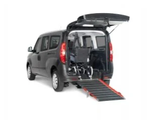
Aluguer de carros
Aluguer de bicicletas
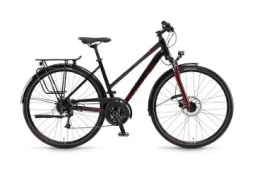
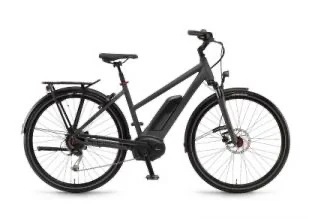
Lavandaria
Serviço de lavandaria
O serviço de lavandaria está disponível. Se precisar de o utilizar, informe a receção.
Orientação
Mapa e garagem
A garagem fechada é gratuita para os hóspedes e está sujeita a disponibilidade.
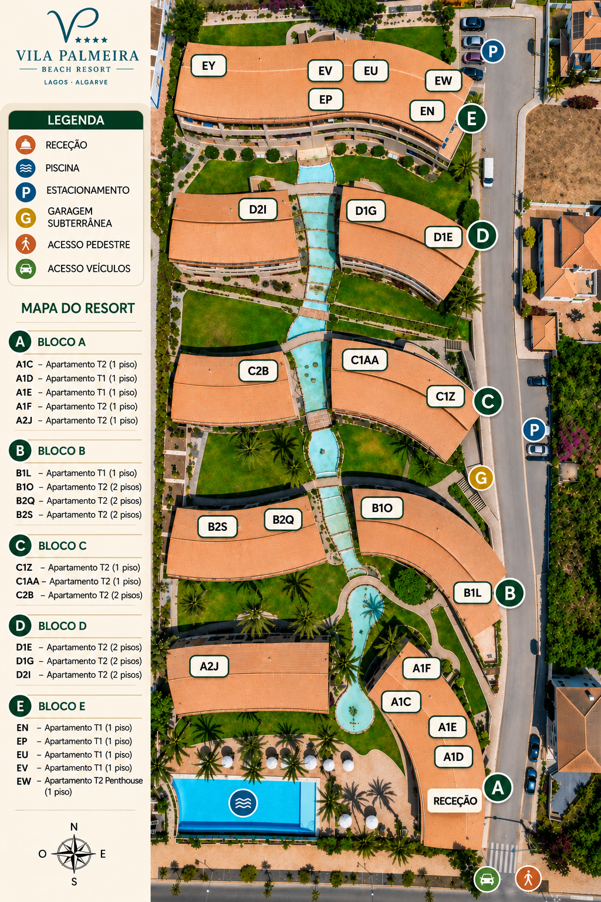

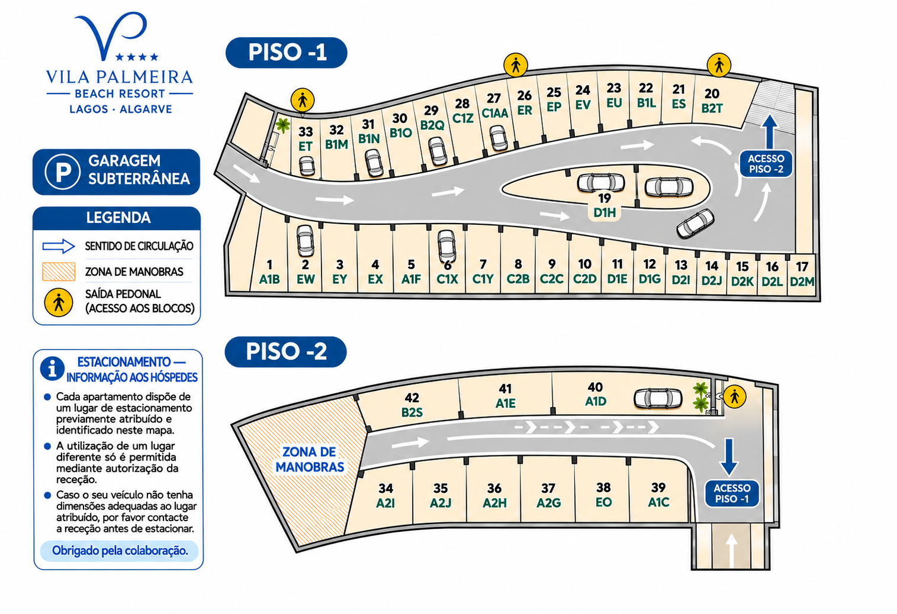

Contactos úteis
Estamos ao seu dispor
Transportes
Número nacional de emergência
112Desejamos-lhe uma excelente estadia
Desfrute da gastronomia fresca e dos produtos locais da nossa região. Partilhe a sua estadia no Tripadvisor ou nas redes sociais.
A direção e a equipa do Vila Palmeira Beach Resort